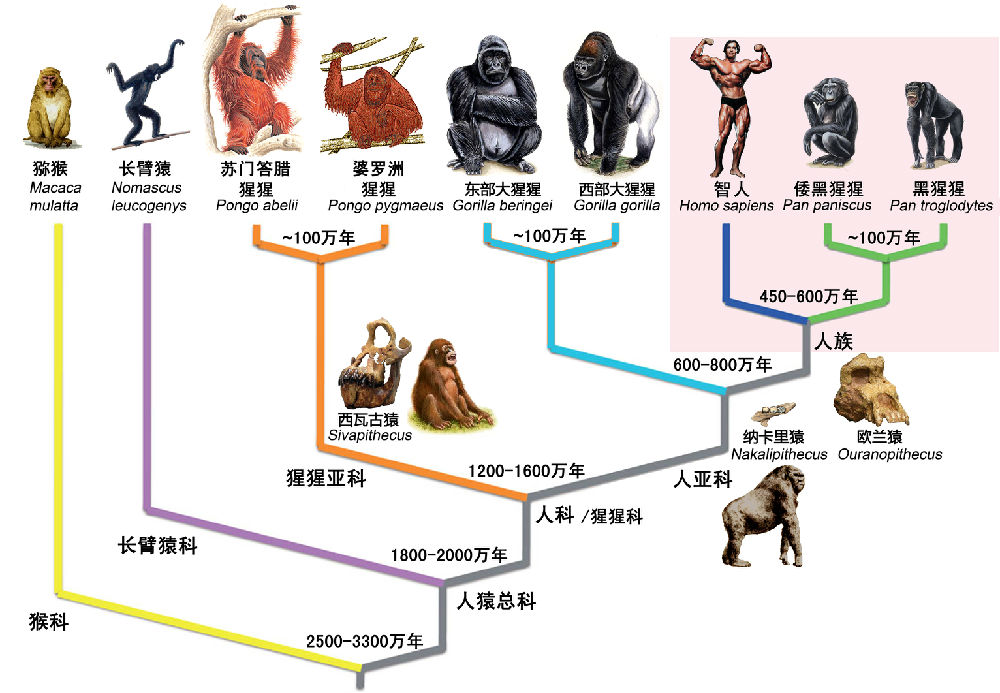
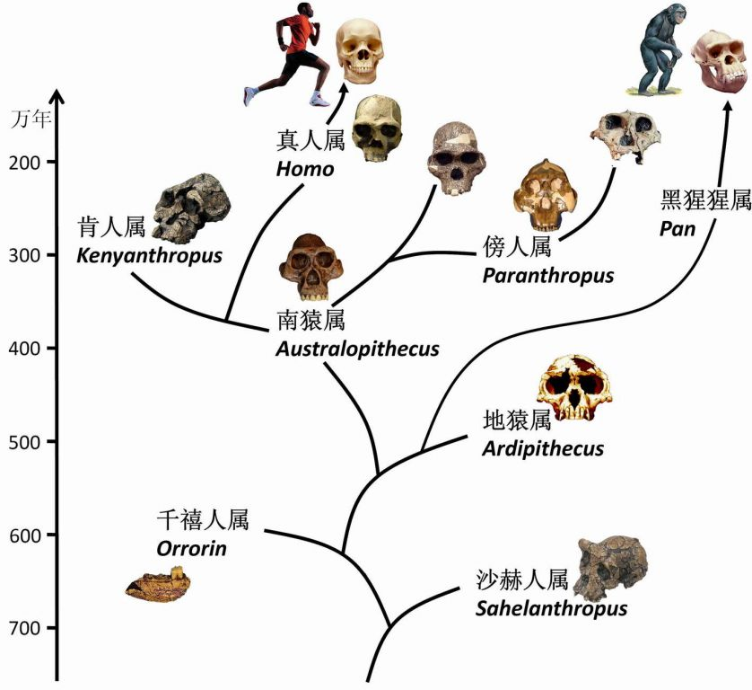
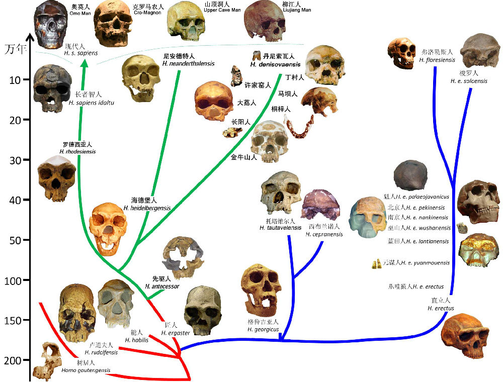
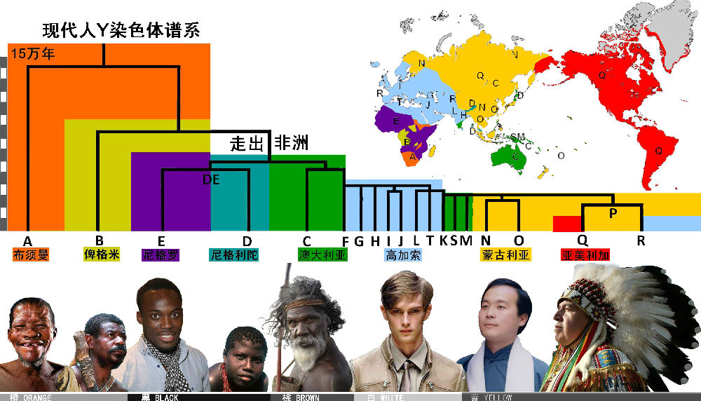
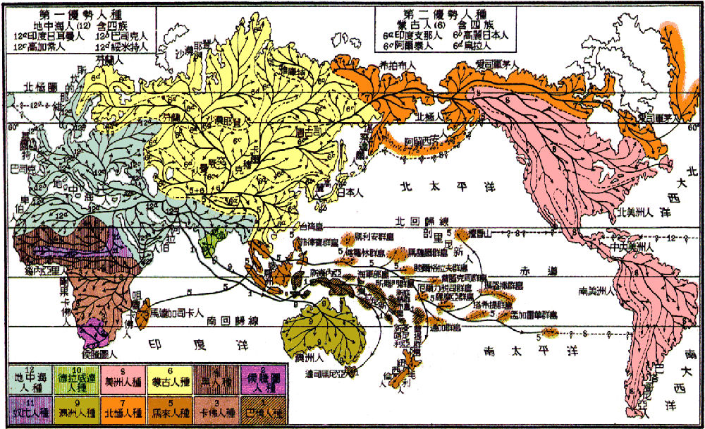
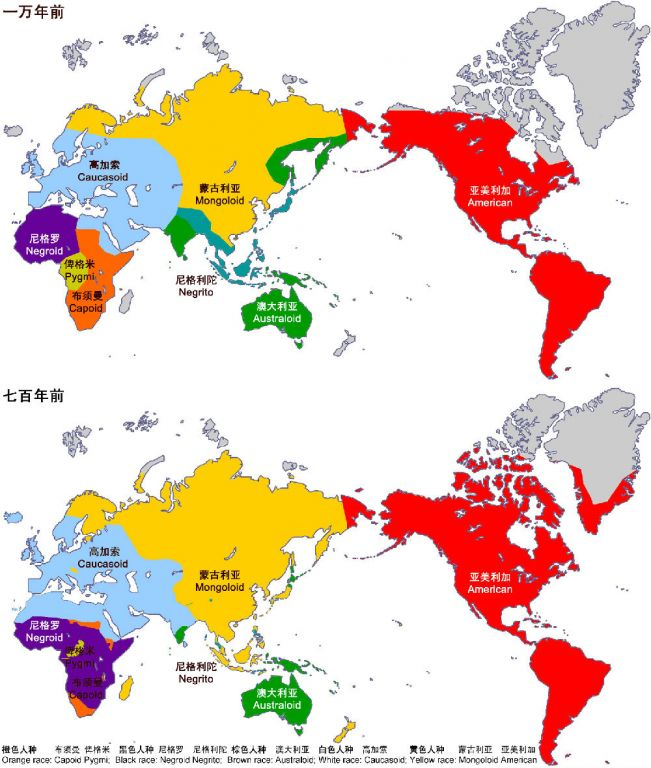

李辉
复旦大学现代人类学教育部重点实验室，上海 200433
摘要：人类起源与演化是最受关注的科学问题之一。近年来的遗传学研究成果成为理解人类演化历史的最坚实证据。由于黑猩猩等类人猿与现代人的基因组差异极小，所以猩猩科与人科合并了，而黑猩猩更属于其中的人族。人族源于大约700万年前，其中，真人属在200多万年前源于南猿属，是普通意义上的人类。人类前期演化出树居人、能人、卢道夫人、匠人等，后期演化出直立人和智人两大分支。基于对智人中的现代人、尼安德特人、丹尼索瓦人的基因组分析比较，发现他们是在80-60万年前分化的，所以智人可以相应分为南方智人（H. s. australis）、北方智人（H. s. septentrionalis）和东方智人（H. s. orientalis）三支。现代人都属于南方智人，大约20万年前发生了体质变化，在7万年前走出非洲，扩散到全世界，形成现今的八个种族。Y染色体的谱系演化与种族的形成是同步发生的，因此两者有较好的对应关系。正确认识人类历史与种族差异，反对宣扬种族优劣的种族主义，有助于促进人类社会的和谐，也有助于推进医学等相关科学的发展。
关键词： 人类起源， 基因组，谱系分析，Y染色体单倍群，人种
近来基于基因组学的遗传学研究成果颠覆了以往的古生物学和生物分类法，甚至动摇了传统的人类阶段进化论。我们将根据最新的遗传学研究成果，从猿类到现代人种来逐步重构人类的进化历程。
长期以来，人类认为自己这个物种是如此的与众不同，应该脱离于动物界，是一个全新的类群。然而，随着系统生物学和进化生物学的建立，生物学家认识到人类依然属于灵长类动物的范畴，与其他的猿类有着很近的遗传关系。在灵长类中，没有尾巴的物种称为猿。现存的猿类有两大类：小猿和大猿。小猿是各种长臂猿，一般单列为一个科，是没有争议的。而对于大猿，传统做法是分为猩猩科和人科，猩猩科包括红猩猩、大猩猩和黑猩猩三个属，而人科只有人类一个属。但是很多进化学家怀疑，把人科从猩猩科划出来完全是人类一厢情愿的做法。而近年来不断完善的灵长类基因组学的研究，使得我们更深入地认识了猿类的系统发生关系，也确定人类并不是一种另类。
人科的谱系因为形态特征的模糊性，传统的形态分类有着先天缺陷，不同的进化路线上可能出现类似的形态。而基因组的差异则是明确而且可以量化的，显然是一种更好的进化学研究材料。两个物种之间的基因组差异程度，与它们之间的分化历史长度是成正比的。所以，通过与地质年代的校正，基因组差异可以转化为分化时间。一般来说，动物界中在大约1000万年以内演化形成的各个物种可以划在一个“科”内。人类与黑猩猩的基因组只有不到2%的差异，分化历史也不到600万年，显然不可能分属两个科。所以，人科与猩猩科就合并了。目前国际上普遍采用的科名是“人科”（Hominidae）。其下再分猩猩亚科（红猩猩）和人亚科（大猩猩、黑猩猩、现代人）[1]。但是红猩猩和其他猩猩的分化年代远超过1000万年，所以或许也可以单列一个科。

类人猿的遗传谱系 倭黑猩猩和黑猩猩与现代人同为人族。
在人亚科中，分出了大猩猩族和人族。很多被冠以“人”的物种，其实都包含在人族之中。根据目前的古生物学发现，最早的人族的物种是发现于非洲中部的沙赫人，距今大约700万年。这显然已经早于人类与黑猩猩的分化年代，所以黑猩猩自然在人族之内，而且从形态上已经比沙赫人更为进化，有更大的脑容量。既然沙赫人都已被称为“人”，或许黑猩猩也应该被证明，不能再称为“猩猩”，至少叫做“黑猿”。实际上中国古代所称的猩猩仅指红猩猩，所以颜色有猩猩红。
人族的第二类物种是2000年发现于肯尼亚的千禧人，距今有约600万年。千禧人的形态与黑猩猩非常接近，而其大腿骨的形态甚至比晚300万年的南猿更接近人类（真人属）。或许南猿并非我们的直系祖先，人类有可能从千禧人直接演化而来。不过由于超过5万年的化石几乎无法分析DNA，所以遗传学在人族演化研究中作用有限。而千禧人的化石也非常少，无法据此做出明确的判断。
地猿发现于埃塞俄比亚，距今约500万年。这一类群的形态与黑猩猩更为接近，非常有可能是黑猩猩的祖先。但是它们的牙齿像南猿的，所以还是难以判断其属于黑猩猩还是人类的分支。约400万年前，南猿出现了，发展成了人族物种中一个兴盛的类群，目前发现的依次有湖畔南猿、阿法南猿、羚羊河南猿、非洲南猿、惊奇南猿、源泉南猿，延续了大约200万年。肯尼亚平脸人能否成为一个独立的属，目前还有争议。从南猿演化出了两个进化策略截然相反的类群：傍人和真人。傍人非常粗壮，头顶有着发达的矢状嵴，也就是有发达的头部肌肉，后部臼齿有现代人的两倍大，但是颅腔很小。所以傍人有着发达的咀嚼能力，属于四肢发达、头脑简单的类型，很像是一种猛兽。但最新研究认为傍人主要是食草的。与傍人相反，真人则脑容量不断增大，四肢和牙齿趋向于纤弱。发达的头脑最终使得真人在进化中胜出，繁衍至今。
最有意思的是，距今二三百万年前的非洲，曾经同时生活着好几种人类的近亲，有南猿、傍人、真人中的能人和卢道夫人，所以人类曾经并不孤单[2]。

人族各属的系统树 距今300多万年前，从南猿属分出的真人属最终胜出。
我们传统意义上称的人类，实际上是狭义的人类概念，也就是生物分类学上真人属的各个物种。真人属起源于大约200多万年前。目前找到的最早的真人化石是非洲东部约230万年前的能人，这一人种可能延续到了大约140万年前。但是2010年在南非的豪登发现的树居人，在形态上比能人更原始，可能是更早出现的人类。不过目前找到的树居人化石的时间段是距今大约190万到60万年，不排除今后还能发现更早的化石。卢道夫人可能是能人的一个分支，发现于肯尼亚，距今大约190万年。
前期的人类除了上述三种以外，在180万年到130万年前的非洲东部和非洲南部，还演化出了另一种人类，匠人。匠人从脑容量等方面看，可能拥有比能人更高的智力，在工具制作方面也比能人更先进。与能人分化以后，匠人成为我们现代人最有可能的直系祖先。由于前期人类化石的年代久远，无法进行DNA分析，而四个物种并没有都留下后代可供遗传分析，所以分子遗传学对于前期人类的谱系分析无法提供帮助。很有可能树居人与能人在200万年前已经分化，而在190万年前卢道夫人和匠人从能人分化出来。
后期的人类传统上分为三大类，猿人（直立人）、古人（早期智人）、新人（晚期智人），曾经被认为是人类发展的三个阶段。现在，阶段论早已被古人类学和遗传学的研究结果所抛弃。首先，从古人类学的化石发现看来，直立人走出非洲，从西亚到东亚的扩张早至180万年前。而分子遗传学对现存的各个大洲的现代人分支进行了分析，无论是全基因组分析，还是线粒体DNA分析和Y染色体谱系分析都得到了一致结果，发现所有现代人都是20万年以内重新起源于非洲的。所以现代人不可能是亚洲的直立人的后代，直立人和智人是两个不同的分支，而不是两个阶段[3]。
从匠人演化出的直立人分支上，还可能分化出了数个近缘分支，包括法国的托塔维尔人、意大利的西布兰诺人、格鲁吉亚的格鲁吉亚人。180万年前的格鲁吉亚人是迄今发现在非洲之外的最早的人类化石。这几种人也往往被认为是直立人的亚种。直立人的标准种是印度尼西亚的爪哇人，50万年前东亚和东南亚的人类都属于直立人的各个亚种，其中最著名的有北京猿人、蓝田猿人、元谋猿人等。不过，元谋猿人的化石仅有两颗牙。虽然直立人在东亚和东南亚广泛分布，但种群可能非常小，很多分布点持续时间很短，这些种群已陆续灭亡，其中印尼爪哇岛的梭罗人一直生存到了14万年前。直立人中最奇特的是印尼东部弗洛勒斯岛发现的弗洛勒斯人。这个人类物种生存于9.4万—1.3万年前，身材极其矮小，小于110厘米。这是迄今发现的最矮小的人类，可能是因为数万年生存于狭小的海岛，应对贫乏的资源而产生的适应。由于特殊的形态，弗洛勒斯人一般被认为是已经区别于直立人的独立物种[4]。

真人属内部的谱系结构 智人与直立人是后期的两大分支。
智人的谱系研究最近有了重大进展。成功获得尼安德特人[5]和丹尼索瓦人[6]的全基因组数据可能是近十年内人类进化研究中最重大的成果。欧亚大陆西部的尼人生活到距今大约3万年前，欧亚大陆东部的丹人生活到距今大约4万年前。通过比较尼人、丹人、现代人的全基因组差异，三者之间的演化谱系结构展示得清晰无遗。尼人和丹人之间有大约60万年的分化，而他们与现代人都有大约80万年的分化。所以这三个类型应该代表着智人的三个主要分支。现代人都是20万年以内走出非洲的，其直系祖先可能是非洲早期智人——罗德西亚人。尼人广泛分布于欧洲和西亚，甚至散布到中亚。丹人虽然发现于阿尔泰山区，但是可能代表着整个东亚和东南亚地区的早期智人。所以，早期智人和晚期智人的名称意义并不确切，更好的名称可以是南方智人、北方智人、东方智人。
不过，母系线粒体的谱系分析得出了稍有不同的三者间拓扑结构。现代人与尼人分开40多万年，两者与丹人分开大约100万年[7]。纯母系的结构与全基因组结构的差异，可能暗示着人类迁徙中的复杂故事，一个人群接受其他人群的女性可能是比较容易的。智人分化的年代，与猩猩、大猩猩、黑猩猩三个属内各两个物种的分化年代基本一致，原因可能是当时全球发生了气候剧变。
智人的起源时间估计在大约120万年前。迄今发现的最早的欧洲人——西班牙阿塔坡卡发现的先驱人就是那个年代的。先驱人已经具有了很多智人的特征。但由于先驱人只是在西班牙昙花一现，可能不久就灭绝了，成为了人类进化中的旁支，并没有留下后代。最早明确属于智人的人类物种是海德堡人。这一类群主要发现于欧洲，生存年代大约在60万到40万年前。海德堡人的脑容量与现代人基本相当，可能是因为他们身材巨大。欧洲海德堡人的平均身高达到了180厘米。有些学者认为非洲同时期的人类也属于海德堡人，比如南非发现的“巨人”，是人类物种中最高大的，达到213厘米。海德堡人可能有了语言，已经开始埋葬死者，很可能是三种智人分化之初的阶段，属于尚未形成形态差异的时期。
对于智人三个分支之间可能发生过的遗传交流，也就是尼人和丹人有没有遗传成分传到现存的现代人中，是人类进化研究中最引人入胜的课题。在尼人和丹人的基因组数据出来之前，对于三种智人之间的遗传交流只能局限于猜想。现在，通过比较三种基因组，我们已经能够比较精确地知晓。在2010年之前，通过纯父系的Y染色体和纯母系的线粒体DNA分析，在现代人中没有发现任何尼人或者丹人的成分。但是最近的全基因组分析得到了稍有不同的结果。非洲现代人中，依旧没有发现任何尼人或丹人的遗传成分。但是在非洲之外的现代人群中，都发现有1%—4%的尼人基因组成分。而且，这些基因交流是在大约7万年前现代人刚刚走出非洲的时候发生的，其后就再也没有发生过，虽然现代人与尼人在欧洲共存了数万年。所以走出非洲以后分化形成的世界各地的人群中都保存了相同的尼人基因比例。
丹人虽然发现于北亚地区，但是在亚洲大陆上的现代人群中没有发现任何丹人的遗传成分。反而，在大洋洲的新几内亚土著人群中发现了大约6%的遗传比例[8]。很有可能新几内亚土著的祖先在迁徙途经中南半岛时接触到了丹人群体，发生了基因交流。所以可以确定，丹人的地理分布很广泛，至少从北亚到东南亚都存在，而且人口不少，有机会把可观的遗传基因流传到新几内亚现代人中。丹人生活的时期，与“东亚早期智人”的生活时期大致重合，可以推断所谓“东亚早期智人”与“丹人”就是同一个物种。
东亚现代人为何没有与丹人发生基因交流，这是一个不容易解释的事实。研究者曾经期待早期的东亚现代人会有更多的尼人或者丹人遗传成分。但是，2013年新发布的北京周口店地区4万多年前的田园洞人基因组，却与现代的中国人几乎没有差别，没有更多“早期智人”的遗传成分[9]。看来，三种智人之间的基因交流可能发生过，但是非常有限。
非洲的南方智人在至少16万年前开始发生明显的形态变化，在埃塞俄比亚演化出了长者智人，其形态间于罗德西亚人和现代人之间。但在埃塞俄比亚还发现了几近20万年前的奥莫现代人，说明长者智人可能在更早时间就形成了，只是有些群体并没有演化成现代人的形态。所以现代人至少20万年前就起源了。但是这些最早的群体并不能全部生存下来，并不能把所有的基因库都流传到现代。因此，从不同遗传方式的基因组区段，可以把现代人的谱系追溯到不同的年代。纯母系的线粒体谱系可以最远追溯到大约20万年前，而纯父系的Y染色体只能追溯到14.2万年前。这说明女性有更公平的生育权，也更容易被其他群体接受。所以20万年到14.2万年之间的很多女性都留下了直系后代至今，而期间的父系只有1个最终留下直系后代至今。
由于男性对族群的主导性，父系的遗传类型（Y染色体类群）容易变少。所以不同群体之间差异最大的遗传物质是Y染色体类群，也叫做Y染色体单倍群。全世界的Y染色体单倍群构成了一个可靠的谱系。Y染色体的主要单倍群的形成需要长期的隔离演化，这与现代人种族的隔离演化机制是一致的。所以现代人发展早期，Y单倍群与人种应该有过很好的对应关系。不过由于近几千年来人群的大规模融合，这种对应关系稍有打乱。
Y染色体的根部类群是A型，仅存在于非洲。其次是B型，也在非洲。所以从Y染色体来看，现代人肯定起源于非洲。C以后的类群（C—T）从B分化出来的年代大约是7万年，所以现代人走出非洲的年代不会早于7万年。A、B、C、D、E这五种类群，每一类内部的亚型都是大约6万年前开始分化形成的。这一时段就是现代人最早的种族形成时期。在距今7万多年前，地球上发生了一次巨大的灾难，苏门答腊岛上的多峇火山发生了超级大爆发，史称多峇巨灾。此后地球进入了冰期，许多动物种群灭亡，人类群体也大量灭亡。留下的少许小群体隔离分布在非洲中部到东北部，形成了数个种族。其后由于冰期的海平面下降，大陆之间出现了很多新的陆地连接，人类群体开始向各大洲迁徙，种族进一步演化。

全世界的Y染色体类群分化与现代人8个种族的形成是同步的
1863年，德国生物学家海克尔绘制了一张人类种族起源图谱。在这张图谱中，全世界的人类分成12个种族。现在，我们对全球的人群有了全面的普查，所以发现海克尔遗漏了2个矮人种族——非洲的俾格米人与亚洲的尼格利陀人。对各人种的遗传基因的分析也发现，海格尔列出的某些人种其实是其他人种的混合群，比如奴比人种和卡佛人种是黑人种与侯腾图人种的不同混合群，德拉威达人种是地中海人种与澳洲人种的混合，马来人种是蒙古人种与尼格利陀人种的混合。而美洲人种与北极人种的差异，以及澳洲人种与巴标人种的差异，其实并不大。

海克尔(Ernst Haeckel)在《自然创造史》中绘制的人类种族起源图谱，马君武译，商务印书馆1936年版。
全世界的人群一共有5种肤色：橙、黑、棕、白、黄。从全基因组的分析[10]看来，全世界的人群可以分成8个人种：布须曼、俾格米、尼格罗、尼格利陀、澳大利亚、高加索、蒙古利亚、亚美利加。按照体质形态特征，全世界的现代人也可以分为上述8个人种。近年来，由于政治上反种族主义的需要，西方遗传学界提出特别的观点，认为种族的概念是没有遗传学根据的。其证据主要是种族之间都存在过渡类型，没有绝对的界线；大多数基因等位型在各个种族内都有一定的频率分布。实际上，种族主义的错误在于认为种族有高低贵贱之分，这导致了人类历史上的多次种族灭绝惨剧。反对种族主义，是要反对种族歧视，反对种族在先天上有优劣之分，而不是否认种族在外形和遗传历史上的客观差异。如果说黑人与白人在生物学上没有差异，这显然不符合客观事实。西方遗传学界提出的种族之间有过渡，其实是近几千年来人群的混合造成的。例如，在加勒比群岛上，还存在美洲印第安人与黑人之间的过渡类型，显然是人群混合形成的，而不是美洲人从非洲渐变而来的过渡类型。等位基因类型在种族之间也大多没有必要差异截然，毕竟现代人与黑猩猩的基因组也只有2%以下的差异。所以种族的基因组之间，只要有少数基因有特异性分布，就足以支持种族的生物学存在了。

现代人8个种族的历史地理分布示意图 灰色部分为无人区
与现代人各个种族对应关系最好的遗传材料是Y染色体的谱系。根据Y染色体的谱系分析，最古老的类型是A群，集中分布于非洲南部和东北部，也零星分布于中非。相关的人种是非洲南部的布须曼人（旧称开普人种或侯腾图人种），非洲东北部的尼罗-撒哈拉人（奴比人种）也与之有关。A群下面的有些亚型只出现在埃塞俄比亚的一些群体中。最近的研究指出，A群可以追溯到非洲中部偏东北地区，非洲南部布须曼人的A群也是从北方而来。布须曼人的科依桑语系的语音是世界语言中最为特别的，有着复杂的搭嘴音。包括尼罗-撒哈拉人在内的布须曼人种的肤色呈橙红色，而不是常见的非洲人的黝黑色。考古学和遗传学研究都发现，非洲的黑人只是最近一千年来从非洲西部扩张到非洲东部和南部，此前非洲大部分区域的居民都是橙色人种。在黑色人种和橙色人种的接触中，Y染色体A群也流入了非洲中南部的黑人中。
年龄其次的Y染色体类群是B群，大致对应中非、刚果等地热带雨林中的俾格米小矮人。非洲东部坦桑尼亚的哈扎比人Y染色体也多为B群，他们的身高也同样偏矮。俾格米人种非常适应在热带雨林中生活，有些村落完全建造于雨林的树冠上。他们的肤色也偏橙色，不同于西非尼格罗人的黑色，所以也算是一种橙色人种。矮小的俾格米人与高大的尼格罗人在毛发上特征差异也很明显。成年俾格米男人有着浓密的胡须，而尼格罗人的胡须一般很稀疏。
两个橙色人种与其他人群的分化都在7万年以上。其他分支都是7万年之内走出非洲的人群的后代。其中D和E最早是黑人的类群，他们可能是六七万年前在埃塞俄比亚与也门所在的红海口处分离。携带E群的人群回到非洲，一路向西，成为非洲西部的尼格罗大黑人；而携带D群的人群辗转向东迁徙，成为东南亚的尼格利陀小黑人。两种黑人的分布区域相距如此遥远，这是非常不可思议的格局。而在身高上也达到两个极端。尼格罗人非常高大，非洲西部有些种群的成年男子往往超过180厘米，而尼格利陀人成年人一般不会超过150厘米，甚至更为矮小。尼格利陀人现在仅存于缅甸以南的安达曼群岛、泰国和马来西亚边境山区、菲律宾中北部山区。但是其对应的Y染色体D群广泛分布于青藏高原、日本列岛和中南半岛。所以这些区域很可能是尼格利陀人的历史分布区，不过后来在黄色或棕色人种的影响下发生了人群体质变化。很有意思的是，菲律宾的尼格利陀人中没有发现D群Y染色体，而有着来自新几内亚的棕色人种的C群和K群。这可能是棕色人种后期的扩张影响。而日本列岛最早的居民绳文人有着D群染色体，身材也在150厘米以下，应该属于尼格利陀人种，但是面貌特征却是典型的澳大利亚棕色人种。所以，在迁徙路线的末端，人种之间交流的复杂程度远超我们的想象。
携带着Y染色体C群和F群的人群跨过红海以后，继续向北进发，F来到了两河流域，而C来到印度河流域。在这两个区域中，两个人群演化成了不同的人种。C人群形成了棕色人种，在五六万年前扩散到东亚、东南亚和澳大利亚、新几内亚、美拉尼西亚，也被称为澳大利亚人种。而F人群则是白种人和黄种人的祖先。
大约在三四万年前F大类开始从两河流域、里海南岸扩张，其下有G到T等14种亚型。G、H、I、J、L、T在欧亚大陆西部成为高加索人种。高加索人种虽然往往被称为白人，但是肤色不一定很白。大约2万年前O和N人群来到东亚形成蒙古人种，取代棕色人种成为东亚的主体人群。大约1.3万年前，N人群从东亚扩张到北亚和北欧。也是在大约2万年前，Q和R人群来到了中亚，但是他们并没有在当地形成独特的种族，而是大多融入了周边的种族。大多Q人群向东迁徙加入蒙古人种，部分继续东迁，大约1.5万年前跨过白令海峡进入美洲，形成亚美利加人种。R是中亚地区的主要类群，但同时大量向西迁徙加入高加索人种，成为南欧人群的主流。
随着Y染色体谱系研究的深入，对Y染色体各个类群分化时间的分析越来越精确，人类群体演化的历史将越来越明确。客观准确地认识人类的演化历史，了解种族、民族和群体方方面面的异同，使我们更好地理解人群之间、人与自然之间应有的和谐关系，更好地维护人群的身体健康和社会健康。
参考文献
1.Locke D P, Hillier L W, WarrenW C, et al. (2011) Comparative and demographic analysis of orang-utan genomes.Nature, 469 (7331): 529-533.
2.Tattersall I. (2000) Once wewere not alone. Scientific American, 282 (1): 56-62.
3.Stringer C. (2012) Evolution:What makes a modern human. Nature, 485 (7396): 33–35.
4.Brown P, Sutikna T, Morwood M J,et al. (2004) A new small-bodied hominin from the Late Pleistocene of Flores,Indonesia. Nature, 431 (7012): 1055-1061.
5.Green R E, Krause1 J, Briggs AW, et al. (2010) A Draft Sequence of the Neandertal Genome. Science, 328(5979): 710–722.
6.Reich D, Green R E, Kircher M,et al. (2010) Genetic history of an archaic hominin group from Denisova Cave inSiberia. Nature, 468 (7327): 1053–1060.
7.Krause J, Fu Qiaomei, Good J M,et al. (2010) The completemitochondrial DNA genome of an unknown hominin from southern Siberia.Nature, 464 (7290): 894-897.
8.Reich D, Patterson N, Kircher M,et al. (2011) Denisova Admixture and the First Modern Human Dispersals intoSoutheast Asia and Oceania. Am J Hum Genet, 89 (4): 516–528.
9.Fu Qiaomei, Meyer M, Gao Xing, etal. (2013) DNA analysis of an early modern human from Tianyuan Cave, China.PNAS, doi: 10.1073/pnas.1221359110.
10. The HUGO Pan-Asian SNPConsortium. (2009) Mapping Human Genetic Diversity in Asia. Science, 326:1541-1545.
转载本文请联系原作者获取授权，同时请注明本文来自王传超科学网博客。
链接地址：http://blog.sciencenet.cn/blog-348453-820348.html